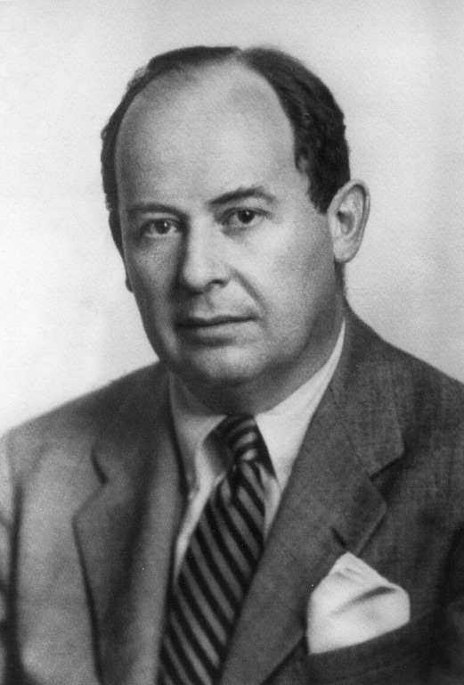

Biography
Von Neumann was born Neumann János Lajos to a wealthy, acculturated and non-observant Jewish family. In Hungarian the family name comes first, and his given names are equivalent to John Louis in English.
Von Neumann was a child prodigy. When he was six years old, he could divide two eight-digit numbers in his head and could converse in Ancient Greek
Although Max insisted von Neumann attend school at the grade level appropriate to his age, he agreed to hire private tutors to give him advanced instruction in those areas in which he had displayed an aptitude. At the age of 15, he began to study advanced calculus. On their first meeting, his tutor was so astounded with von Neumann's talent he was brought to tears
By the age of 19, von Neumann had published two major mathematical papers, the second of which gave the modern definition of ordinal numbers.
He went to University and passed his final examinations for his Ph.D. in mathematics simultaneously with his chemical engineering degree.
He became the youngest professor in any subject at the University of Berlin in 1928 before being invited to Princeton University.
In 1933, he was offered a lifetime professorship at the Institute for Advanced Study in New Jersey where he remained a mathematics professor until he died.
Von Neumann made major contributions to many fields, including:
- Mathematics (foundations of mathematics, functional analysis, ergodic theory, group theory, representation theory, operator algebras, geometry, topology, and numerical analysis)
- Physics (quantum mechanics, hydrodynamics, and quantum statistical mechanics)
- Economics (game theory)
- Computing (Von Neumann architecture, linear programming, self-replicating machines, stochastic computing)
- Nuclear Physics (The Manhattan Project)
- Technological singularity hypothesis
In 1955, he was diagnosed with either bone, pancreatic, or prostate cancer. This was likely caused from radiation exposure during his time at Los Alamos Research Laboratory during the Manhattan Project.
He died at age 53 on February 8, 1957, at the Walter Reed Army Medical Center in Washington, D.C., under military security lest he reveal military secrets while heavily medicated.